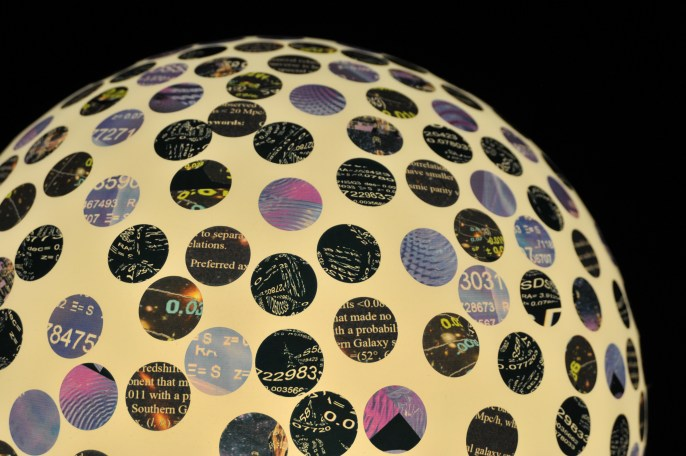

A group exhibition organised by Musee en Herbe, Paris
Musee en Herbe is a charity whose purpose is to introduce art to children. They have a small museum in the centre of Paris. For this exhibition they invited 29 of the World's leading light artist's to contribute works that would be sold in support of the charity and the Fondation Vasarely. Each artist was provided with a giant size Edison light bulb that they customised to make into a unique work of art. The exhibiton was taken on a short tour before being sold. (Fondation Vasarely, Aix-en-Provence; Fondation EDF, Paris; Christie's, Paris: June - July 2013) Here the works are seen at Christie's prior to their sale.
My light bulb continued to explore the ideas from Spinning Cosmos, hundreds of stickers, each one a different design selected from the kinetic stream of images that formed part of the light installation. Spinning Cosmos was shown at Art Futura 2012 in Montevideo and is based on work by American physicist, Michael Longo of the University of Michigan at Ann Arbor, who has discovered a mysterious alignment of galactic spins that hints at the possibilty the universe may have a preferred direction of spin and a cosmic equivalent of a north and south pole.
 |
|
About 10 years ago I made two experimental videos performing my art. I recently decided it was time to develop this idea further. In all the preceding years of creating light art I have never before put myself centre stage in front of my audience. Here at Christie's is one of the very first of these live performances, the uncut video shows the raw feel of this new direction. |
|